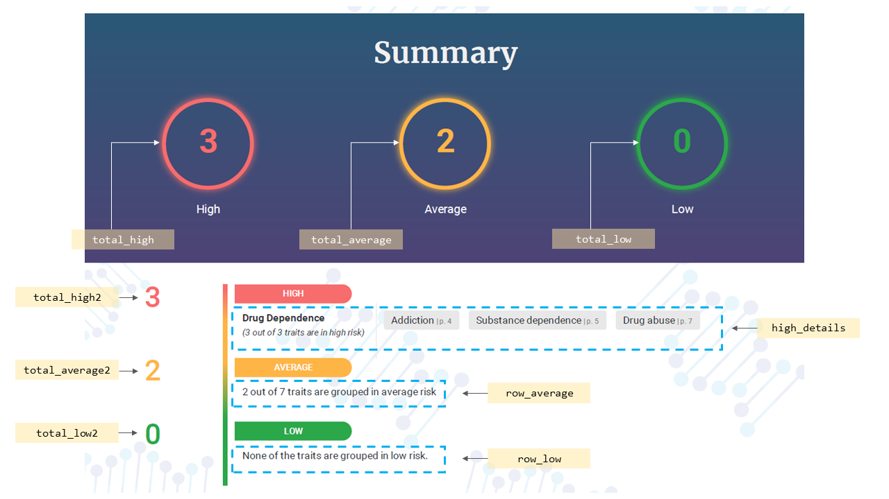

HTML TEMPLATE
A guide on how to create HTML template for NovoClinic's wellness report.
General Template
In a wellness report, users may want to include several general HTML templates that will be repeatedly used across all the generated reports. For example, users may want to include the Cover page of the report, the Disclaimer page, the Summary that will summarise and highlight important information regarding the modules their respective traits, the Table of Contents of the report and the last page of the report.
Summary template
In NovoClinic, there are NINE risk levels provided; Elevated, Slightly Elevated, Normal, Slightly Advantaged, Advantaged, High, Increased, Average and Low risk. In Summary template, it will normally highlight two important things:
- The total number of traits detected in every risk level.
- The list of traits in the highest risk level, either Elevated or High Risk.
Notes:
Although summary HTML can be customised, however we highly recommend users to use or modify our existing template to avoid unwanted occurrences. We also advise users to use Bootstrap version 4.5.3 and above to create the Summary HTML. To include Bootstrap in HTML, please refer to here.
Requirements
- jQuery v3.5.1 (inside the head tag):
Inserting total number of traits detected in each risk category
In summary HTML, users can only place the total number of traits in each risk level at most two times, using the ID provided in the table below.
| No | ID | Description |
|---|---|---|
| 1 |
total_elevated, total_elevated2 |
Total number of traits that are grouped in Elevated risk |
| 2 |
total_slight_elevated, total_slight_elevated2 |
Total number of traits that are grouped in Slightly Elevated risk |
| 3 |
total_normal, total_normal2 |
Total number of traits that are grouped in Normal risk |
| 4 |
total_slight_advantaged, total_slight_advantaged2 |
Total number of traits that are grouped in Slightly Advantaged risk |
| 5 |
total_advantaged, total_advantaged2 |
Total number of traits that are grouped in Advantaged risk |
| 6 |
total_high, total_high2 |
Total number of traits that are grouped in High risk |
| 7 |
total_increased, total_increased2 |
Total number of traits that are grouped in Increased risk |
| 8 |
total_average, total_average2 |
Total number of traits that are grouped in Average risk |
| 9 |
total_low, total_low2 |
Total number of traits that are grouped in Low risk |
For example, if users want to include only THREE risk categories (High, Average and Low risk) in a summary, the following lines can be included:
Highlighting the highest risk categories
Among the nine risk categories, users can only highlight one risk category that is the most risky, either Elevated or High risk. Users can use div with id in the table below to list the traits that are grouped in that particular category with their respective page number.
| No | ID | Description |
|---|---|---|
| 1 | elevated_details | The list of traits that are grouped in Elevated risk with their respective page number. |
| 2 | high_details | The list of traits that are grouped in High risk with their respective page number. |
For example, to highlight the traits that are grouped in High risk category in summary HTML, the following line should be included:
Highlighting other risk categories
For other risk levels such as Slightly Elevated, Normal, Slightly Advantaged, Advantaged, Increased, Average and Low risk, novoClinic will only print the total of traits detected for that particular level. Table below shows the id that users may use in summary HTML for other risk levels.
| No | ID | Description |
|---|---|---|
| 1 | row_slight_elevated | Total traits detected in Slightly Elevated risk. If there is no trait detected, novoClinic will print out “None of the traits are grouped in slightly elevated risk.” |
| 2 | row_normal | Total traits detected in Normal risk. If there is no trait detected, novoClinic will print out “None of the traits are grouped in slightly normal risk.” |
| 3 | row_slight_advantage | Total traits detected in Slightly Advantaged risk. If there is no trait detected, novoClinic will print out “None of the traits are grouped in slightly advantaged risk.” |
| 4 | row_advantaged | Total traits detected in Advantaged risk. If there is no trait detected, novoClinic will print out “None of the traits are grouped in advantaged risk.” |
| 5 | row_increased | Total traits detected in Increased risk. If there is no trait detected, novoClinic will print out “None of the traits are grouped in slightly increased risk.” |
| 6 | row_average | Total traits detected in Average risk. If there is no trait detected, novoClinic will print out “None of the traits are grouped in average risk.” |
| 7 | row_low | Total traits detected in Low risk. If there is no trait detected, novoClinic will print out “None of the traits are grouped in low risk.” |
For example, to briefly highlight other categories such as Average and Low risk in summary HTML, the following lines can be included:
Example output of summary
Figure below demonstrates the example output of Summary HTML of the report using the HTML IDs provided to summarise the risk categories.
Table of Contents
Users may also have to include a Table of Contents for each report to help patients, clinicians or doctors to review the report and allow them to go directly to a specific module or trait.
Requirements
- jQuery v3.5.1 (inside the head tag):
Full example of Table of Contents
The table will consist of two columns, listing the modules and traits with their respective page number in the report. The full example of Table of Content HTML is as follows:
Other general templates
For other than Summary and Table of Contents template, users have to follow the basic structure of template as shown below.
Notes:
Please note that <div class="last-page"></div> must be included in every HTML file before the close of body tag for novoClinic report creation purposes.
Module Template
Depending on the users, the Module HTML template may consist of an overview of traits in a particular module such as the total SNPs detected in a module, the percentage of SNPs reported, the list of traits in a module and their respective risk categories.
Requirements
- jQuery v3.5.1 (inside the head tag):
Basic structure of Module template
To create the Module HTML template, users have to follow the basic structure of template as shown below.
Placeholders in Module template
Table below shows a list of placeholders users can include in the Module HTML file. The placeholders must be placed inside their own helpers.
Notes:
Please note that every helpers must be closed with {{/each}}.
| No. | Helper | Placeholder | Description |
|---|---|---|---|
| 1 | {{#each patient_info}} | {{patient_firstName}} {{patient_lastName}} |
Patient's full name |
| 2 | {{#each patient_info}} | {{patient_MRNNumber}} | Patient's ID |
| 3 | {{#each name}} | {{module_name}} | Name of module. |
| 4 | - | {{total_snps}} | Total SNPs detected in a module. |
| 5 | {{#each module_annotation}} | {{{description}}} | The description/introduction of the module. |
| 6 | {{#each module_annotation}} | {{{assessment}}} | The assessment of the module. |
| 7 | {{#each module_annotation}} | {{{module_risk_category}}} | The risk category of the module. |
| 8 | {{#each module_annotation}} | {{{recommendation}}} | The recommendation of the module. |
| 9 | {{#each counts}} | {{trait_name}} | The name of the traits. |
| 10 | {{#each counts}} | {{snps}} | The percentage of SNPs reported for each trait. |
| 11 | {{#each counts}} | {{{snps_percentage}}} | The percentage of detected snps (with HTML elements).
Calculation: SNPs observed / Module SNPs |
| 12 | {{#each counts}} | {{trait_risk_category}} | Assessment/risk level of particular trait. |
| 13 | {{#each counts}} | {{{risk_id}}} | ID assigned for the HTML element of each risk category. It can be used if users want to customize background color or text color of risk categories in CSS. For more details, refer here. |
Example of Module template
Trait Template
Depending on the users, the Trait HTML template may contain the detailed information for each trait such as the description of traits, the total of phenotype, gene and SNPs detected in particular trait, and the list of phenotypes and variants.
Requirements
- jQuery v3.5.1 (inside the head tag):
Placeholders
Table below shows a list of placeholders users can include in the Trait HTML file. The placeholders must be placed inside their own helpers.
Notes:
Please note that every helpers must be closed with {{/each}}.
| No. | Helper | Placeholder | Description |
|---|---|---|---|
| 1 | {{#each counts}} | {{{trait_id}}} | ID for each trait. Useful for navigating links to the desired trait section when viewing HTML. |
| 2 | {{#each counts}} | {{trait_name}} | The name of the traits. |
| 3 | {{#each counts}} | {{trait_risk_category}} | Risk category of particular trait. |
| 4 | {{#each counts}} | {{{risk_id}}} | ID assigned for the HTML element of each risk level.It can be used if users want to customize background color or text color of risk level in CSS. For more details, refer here. |
| 5 | {{#each counts}} | {{trait_description}} | The introduction/description of each trait. |
| 6 | {{#each counts}} | {{trait_recommendation}} | The recommendation of each trait. |
| 7 | {{#each counts}} | {{trait_assessment}} | The assessment of each trait. |
| 8 | {{#each counts}} | {{trait_risk_category}} | Risk category of particular trait. |
| 9 | {{#each counts}} | {{phenotype_count}} | The counts of phenotypes for each trait. |
| 10 | {{#each counts}} | {{gene_v_count}} | The counts of genes for each trait. |
| 11 | {{#each counts}} | {{snps_v_count}} | The counts of SNPs for each trait. |
| 12 | {{#each counts}} | {{{phenotype}}} | The phenotypes list for each trait. |
| 13 | {{#each counts}} | {{{variants_info}}} | The variants list each trait which includes the RSID, impact factor, AF and Genotype. |
| 14 | {{#each counts}} | {{genetic_variation}} | The list of variants of each trait.
*Example output: variant_1, variant_2, variant_3 |
Example of Trait template
Optionals
While it is not necessary, we however recommend users to enhance the presentation of the report, including the structure of contents, colors, layout, and fonts to help readers during reviewing your report.
CSS
There are three ways to add CSS in your HTML:
- Inline CSS
- Internal CSS
- External CSS
Users can include style attributes inside HTML elements. For example:
Users can include the style element in the head section. For example:
Users can include a link in the head section to link external CSS file. For example:
Bootsrap v4.5.3
The compiled CSS and Javascript of Bootstrap v4.5.3 are already installed in novoClinic. To use the Bootstrap’s features, the following lines must be included in the head section:
- For General HTML:
For more information on the Bootstrap usages, users are advised to refer to their documentation
Icons (Font Awesome v5.15.1)
The simplest way to include icons into a HTML template is by using icon libraries. There are many free icon libraries available such as Font Awesome, Bootstrap, and Google Icons. In novoClinic, users can use Font Awesome v5.15.1 in their HTML template without any download or installation.
First, add the following line into the head section:
- For General template:
Next, users can add their icon of interest in the body section. For example:
For a more list of Font Awesome’s icons that users can use, refer here.
Risk categories
Users can also customize the background color or text color of each risk level in CSS by using {{{risk_id}}} placeholder in HTML. IDs for each risk level that will be used in CSS are listed in the table below.
| No. | ID | Description | Default color |
|---|---|---|---|
| 1 | elevated | ID for Elevated risk | #F76C6C |
| 2 | slightlyelevated | ID for Slightly Elevated risk | #FEB546 |
| 3 | normal | ID for Normal risk | #3498DB |
| 4 | slightlyadvantaged | ID for Slightly Advantaged risk | #64B6AC |
| 5 | advantaged | ID for Advantaged risk | #2BA84A |
| 6 | high | ID for High risk | #F76C6C |
| 7 | increased | ID for Increased risk | #FEB546 |
| 8 | average | ID for Average risk | #FEB546 |
| 9 | low | ID for Low risk | #3498DB |
The usage of {{{risk_id}}} (high, average and low risk) and their respective IDs are shown in the example below.